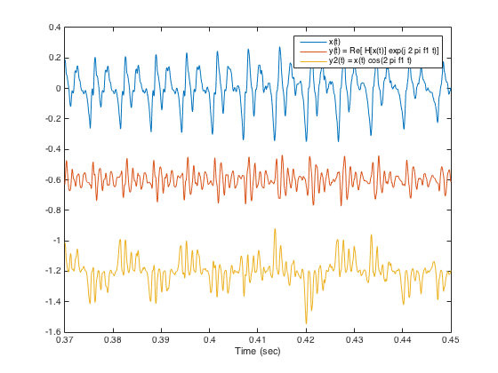

demo_6: Speech spectrum shifting
Voice morphing via complex AM
Contents
Load speech signal
clear [x, fs] = audioread('author.wav'); fs % sampling frequency (samples/second) N = length(x); n = 0:N-1; t = n'/fs; soundsc(x, fs)
fs =
16000
Design complex filter
K = 7; [b_lpf, a_lpf] = ellip(K, 0.2, 50, 0.48); % complex modulate filter coefficients to get complex filter I = sqrt(-1); % s = exp( I * 0.5 * pi * (0:K) ); s = I.^(0:K); % (equivalent) b = b_lpf .* s; a = a_lpf .* s;
Apply filter to signal
r = filter(b, a, x);
Complex AM
f1 = 400; % Modulation frequency
g = r .* exp( I * 2 * pi * f1 * t );
y = real(g);
soundsc(y, fs)
Real AM
y2 = x .* cos( 2 * pi * f1 * t ); soundsc(y2, fs)
View output
figure(2) clf V = 0.6; % vertical offset parameter plot(t, x, t, y - V, t, y2 - 2*V) legend('x(t)', 'y(t) = Re[ H[x(t)] exp(j 2 pi f1 t)]', 'y2(t) = x(t) cos(2 pi f1 t)') xlabel('Time (sec)') xlim([0.37 0.45]) print -dpdf demo_6 audiowrite('author_Complex_AM.wav', y, fs) audiowrite('author_AM.wav', y2, fs) % wavwrite(y, fs, 'author_Complex_AM') % wavwrite(y2, fs, 'author_AM')
Assignment: implement in real-time in Python / PyAudio with input from microphone